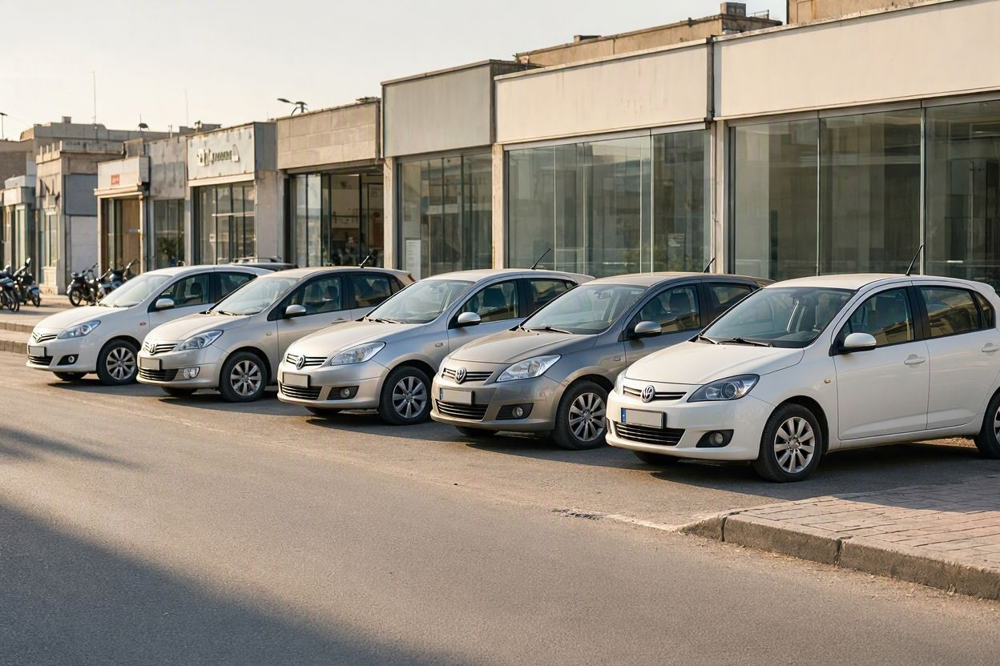
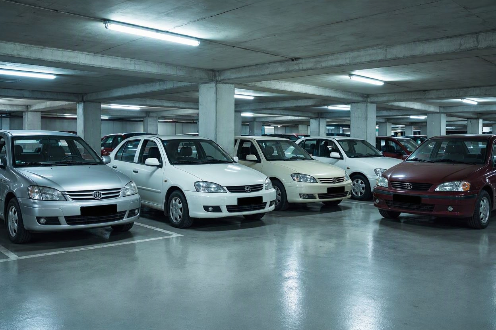
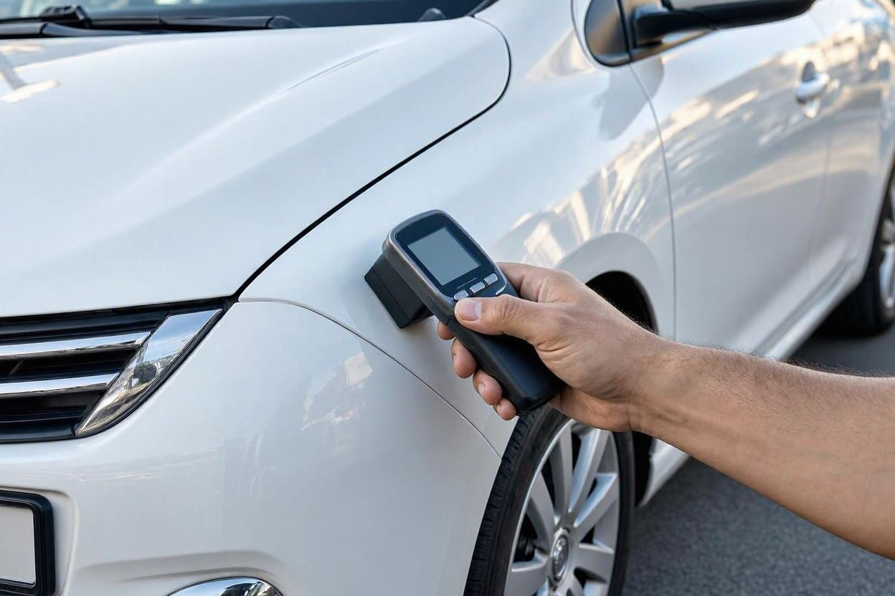
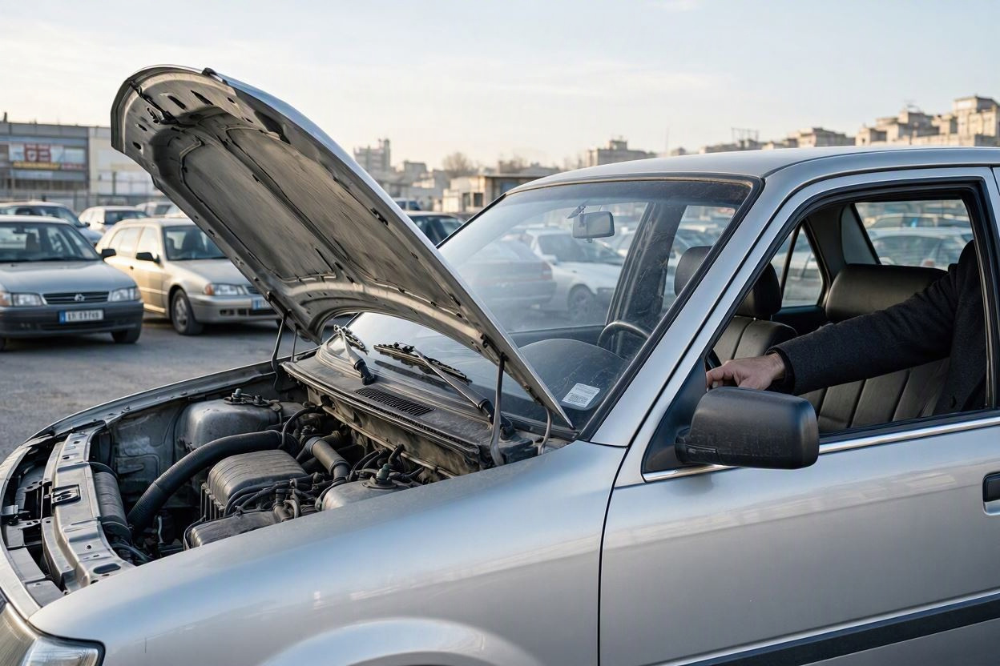
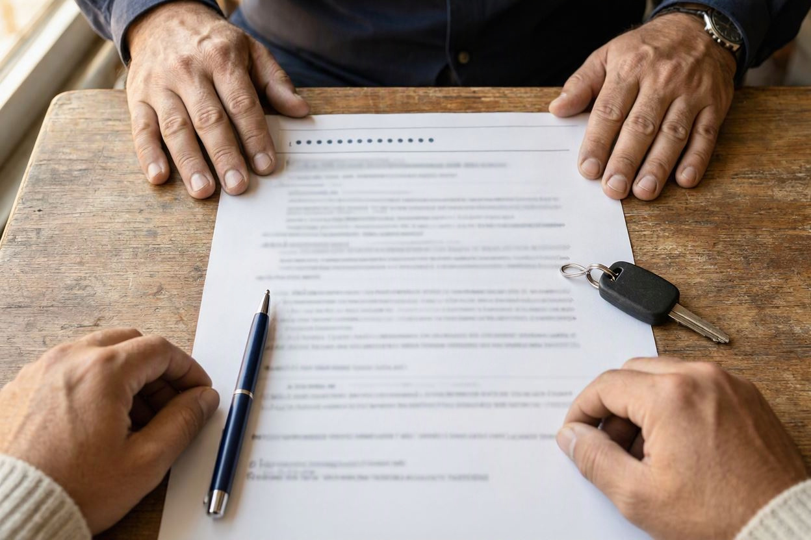

بورس نمایشگاه ماشین شرق تهران؛ راهنمای تهرانپارس، هروی و مجیدیه
جمعه صبح است و برای دیدن یک پژو ۲۰۷ به تهرانپارس رفتهاید. پشت سر هم پنج نمایشگاه میبینید، همه ماشینها برق میزنند و هر فروشنده میگوید ماشین خودش «بیرنگ و کمکار» است. حالا باید تصمیم بگیرید به کدام اعتماد کنید.
بورس نمایشگاه ماشین شرق تهران برای خریدار یک فرصت است: در چند خیابان میشود چندین خودروی هممدل را کنار هم دید و قیمتها را مقایسه کرد. اما همین تراکم، فضای معامله را هم سریع و پرفشار میکند. ما در کارماچک این راهنما را برای کسی نوشتهایم که میخواهد با برنامه به تهرانپارس، میدان هروی یا مجیدیه برود، نه با حدس و عجله.
بورس نمایشگاه ماشین شرق تهران بیشتر در سه محدوده متمرکز است: محورهای اصلی تهرانپارس، اطراف میدان هروی و خیابان استاد حسن بنا در مجیدیه. خرید از این نمایشگاهها وقتی امنتر است که مالکیت خودرو را استعلام کنید، ماشین را در نور روز و با موتور سرد ببینید و قبل از امضای قولنامه، یک کارشناس مستقل خودرو را در محل نمایشگاه بررسی کند.
خلاصه در یک دقیقه
- تهرانپارس، هروی و مجیدیه سه قطب اصلی نمایشگاههای خودرو در شرق تهران هستند و ترکیب ماشینهایشان مدام تغییر میکند.
- خیلی از خودروهای نمایشگاه «امانی» هستند؛ یعنی مالک واقعی شخص دیگری است و نمایشگاه فقط واسطه است.
- براقبودن بدنه و تمیزی موتور نشانه سلامت نیست و گاهی ایراد را پنهان میکند.
- بردن کارشناس مستقل به نمایشگاه کاملاً عادی است و مخالفت فروشنده خودش یک نشانه هشدار است.
بورس نمایشگاه ماشین شرق تهران کجاست؟
«بورس» در بازار خودرو یعنی محدودهای که نمایشگاهها پشت سر هم و در چند خیابان نزدیک به هم جمع شدهاند. در شرق تهران سه محدوده بیش از بقیه این نقش را دارند. مرز دقیق هر بورس ثابت نیست؛ نمایشگاهها جابهجا میشوند، بعضی تعطیل میشوند و بعضی به مراکز خرید سرپوشیده میروند. پس قبل از رفتن، آگهیهای همان محله را در سایتهای آگهی خودرو فیلتر کنید تا ببینید آن هفته چه مدلهایی بیشتر عرضه شده.
نمایشگاه های ماشین تهرانپارس
تهرانپارس در منطقه ۴ و ۸ شهرداری تهران قرار دارد و نمایشگاههای خودرو در طول محورهای اصلی آن پراکندهاند؛ از بلوار پروین تا اطراف فلکهها، یعنی میدان قمر بنی هاشم (فلکه اول)، چهارراه اشراق (فلکه دوم) و میدان سجادیه (فلکه سوم). بهخاطر وسعت محله، تهرانپارس بیشتر شبیه چند بورس کوچک است تا یک خیابان واحد. برای همین بهتر است مسیرتان را از قبل روی نقشه بچینید و وقت را بین فلکهها هدر ندهید.
نمایشگاه های ماشین میدان هروی
اطراف میدان هروی و خیابانهای منتهی به آن یکی دیگر از تمرکزهای نمایشگاهداری در شرق تهران است. در این محدوده چند نمایشگاه سرپوشیده هم داخل مراکز خرید راه افتاده که خودروها را در پارکینگ طبقات منفی عرضه میکنند. نور مصنوعی پارکینگ برای دیدن رنگ و موج بدنه کافی نیست؛ اگر ماشینی نظرتان را گرفت، بخواهید آن را برای چند دقیقه بیرون و زیر نور روز ببینید.

نمایشگاه های ماشین مجیدیه
در مجیدیه، نمایشگاهها بیشتر در امتداد خیابان استاد حسن بنا (مجیدیه شمالی و جنوبی) دیده میشوند. این محدوده به رسالت و هروی نزدیک است و خیلی از خریدارها در یک روز هر دو را میبینند. فاصله کم این سه بورس یک مزیت واقعی است: میتوانید یک مدل مشخص را در چند نمایشگاه ببینید و قیمت و وضعیت را با هم مقایسه کنید.
| نوع محل عرضه | مزیت برای خریدار | نکته بازدید |
|---|---|---|
| نمایشگاه کنار خیابان | دیدن ماشین در نور روز و امکان تست رانندگی سریع | ماشین را با موتور سرد ببینید، نه بعد از جابهجایی |
| نمایشگاه سرپوشیده در مرکز خرید | تعداد خودروی بیشتر در یک مکان و بازدید راحت در هوای بد | بدنه را بیرون از پارکینگ و زیر نور طبیعی بررسی کنید |
| خودروی امانی در نمایشگاه | تنوع بیشتر و گاهی قیمت نزدیکتر به فروش شخصی | مالک اصلی و وضعیت سند و وکالت را استعلام کنید |
خرید از نمایشگاه با خرید از شخص چه فرقی دارد؟
فرق اصلی در این است که نمایشگاهدار معمولاً مالک خودرو نیست. بخش زیادی از ماشینهای بورس امانیاند؛ یعنی صاحب ماشین آن را برای فروش به نمایشگاه سپرده. در عمل، نمایشگاهدار ممکن است از سابقه ماشین فقط همان را بداند که مالک گفته. پس جمله «ما ماشین را میشناسیم» جای استعلام و بررسی را نمیگیرد.
نمایشگاههای دارای پروانه زیر نظر اتحادیه صنفی کار میکنند. نرخ کمیسیون خرید و فروش را اتحادیه هر سال اعلام میکند و قولنامه نمایشگاه معمولاً با کد رهگیری ثبت میشود. قبل از امضا بپرسید کمیسیون با کیست و چقدر است، و مطمئن شوید نام مالک در قولنامه با مدارک خودرو یکی است.
ترفندهای رایج نمایشگاه ها که باید بشناسید
همه نمایشگاهداران این کارها را نمیکنند، اما شناختن الگوها کمک میکند ماشین را آنطور که هست ببینید، نه آنطور که آماده شده. در بازار خودروی شرق تهران، این موارد را زیاد میشنوید:
- پولیش و واکس تازه: بدنه براق، خط و خش و گاهی اختلاف رنگ قطعات را کمتر نشان میدهد.
- موتورشویی: موتور خیلی تمیز ممکن است فقط مرتب باشد، ولی ممکن است نشت روغن را هم موقتاً پاک کرده باشد.
- موتور گرم قبل از رسیدن شما: ایرادهای استارت سرد، مثل صدای غیرعادی یا دود، در موتور گرم کمتر دیده میشوند.
- قیمت جذاب برای کشاندن مشتری: ماشینی که پایینتر از بازار آگهی شده، گاهی «فروخته شده» و مدل گرانتری پیشنهاد میشود.
- عجله مصنوعی: جملههایی مثل «یک مشتری دیگر هم بیعانه آورده» برای کوتاهکردن زمان تصمیم شماست.

برای اینکه زیر فشار فضای نمایشگاه چیزی از قلم نیفتد، چک لیست خرید خودرو دست دوم را روی گوشی داشته باشید و مورد به مورد جلو بروید.
پیش از معامله در نمایشگاه، خودرو را بررسی کنید
اگر ماشینی در تهرانپارس، هروی یا مجیدیه نظرتان را گرفته، کارشناس میتواند همانجا در محل نمایشگاه وضعیت فنی، رنگ و بدنه را بررسی کند.
رزرو کارشناسی خودروآیا می توان کارشناس را به نمایشگاه برد؟
بله. بردن کارشناس مستقل به نمایشگاه رویهای رایج و منطقی است و نمایشگاهداری که به ماشینش مطمئن است معمولاً مخالفتی نمیکند. اگر فروشنده فقط کارشناس «آشنای خودش» را پیشنهاد میدهد یا با آمدن کارشناس بیرونی مخالفت میکند، این را یک نشانه هشدار بدانید، نه دلیلی برای اعتماد بیشتر.
بهترین زمان کارشناسی، بعد از توافق اولیه روی قیمت و قبل از امضای قولنامه است. در این مرحله نتیجه کارشناسی هنوز میتواند قیمت را اصلاح کند یا شما را از معامله منصرف کند. اینکه هزینه این بررسی را چه کسی بدهد هم قابل مذاکره است؛ در مطلب هزینه کارشناسی خودرو با خریدار است یا فروشنده این موضوع را جداگانه بررسی کردهایم.

برنامه بازدید از بورس نمایشگاه ماشین شرق تهران در یک روز
یک روز منظم در بورس، از چند روز رفتوآمد بیبرنامه نتیجه بهتری میدهد. این ترتیب را پیشنهاد میکنیم:
- مرحله اول:شب قبل، آگهیهای همان مدل در تهرانپارس، هروی و مجیدیه را جمع کنید و قیمت روز را با قیمت گذاری خودرو مقایسه کنید تا بدانید کدام آگهی غیرعادی است.
- مرحله دوم:صبح زود بروید. نور روز برای دیدن رنگ بهتر است و ماشینها هنوز روشن نشدهاند.
- مرحله سوم:در هر نمایشگاه اول بپرسید ماشین امانی است یا نه، و کارت و سند را ببینید.
- مرحله چهارم:دو یا سه گزینه نهایی را انتخاب کنید و برای هر کدام تست رانندگی کوتاه بخواهید.
- مرحله پنجم:برای گزینه اول کارشناس را به محل نمایشگاه بیاورید و فقط بعد از دیدن گزارش، درباره قیمت نهایی و قولنامه حرف بزنید.

کارماچک در بورس های شرق تهران چه کمکی می کند؟
کارماچک یک ارائهدهنده خدمات کارشناسی خودرو در ایران است و کارشناس آن میتواند در محل نمایشگاه، وضعیت فنی، رنگ، بدنه و شاسی خودرو را بررسی کند. فقط ایراد خودرو را شناسایی نمیکنیم؛ اثر آن روی هزینه تعمیر و ارزش واقعی معامله را هم مشخص میکنیم. این گزارش به شما کمک میکند در مذاکره با نمایشگاهدار بر اساس واقعیت ماشین حرف بزنید.
جمع بندی
بورس نمایشگاه ماشین شرق تهران، از تهرانپارس تا میدان هروی و مجیدیه، جای خوبی برای مقایسه چند خودروی هممدل در یک روز است. اما تنوع و سرعت بازار نباید شما را به تصمیم عجولانه برساند. مالکیت را استعلام کنید، ماشین را سرد و در نور روز ببینید، بیعانه را عقب بیندازید و قبل از قولنامه نظر یک کارشناس مستقل را بگیرید. کارشناسی هم تشخیص صددرصد همه ایرادها را تضمین نمیکند، ولی ابهام معامله را به شکل محسوسی کم میکند.
کارشناسی در محل نمایشگاه
ماشین مورد نظرتان را پیدا کردهاید؟ قبل از امضای قولنامه، کارشناسی خودرو قبل از خرید را در همان نمایشگاه انجام دهید.
ثبت درخواست کارشناسیسؤالات متداول
بزرگترین بورس نمایشگاه ماشین شرق تهران کجاست؟
آمار رسمی از تعداد نمایشگاههای هر محله منتشر نمیشود، اما تهرانپارس بهخاطر وسعت و تعداد محورهای تجاری، پراکندگی نمایشگاه بیشتری دارد. میدان هروی و مجیدیه متمرکزترند و چون به هم نزدیکاند، بازدید از هر دو در یک روز راحت است. برای انتخاب، آگهیهای همان هفته را در هر محله مقایسه کنید.
خرید ماشین از نمایشگاه امنتر است یا از شخص؟
هیچکدام بهتنهایی امنتر نیست. نمایشگاه دارای پروانه، قولنامه با کد رهگیری و نشانی ثابت دارد، اما معمولاً مالک ماشین نیست و از سابقه آن اطلاع کامل ندارد. در هر دو حالت استعلام مدارک و کارشناسی مستقل پیش از پرداخت، مهمترین عامل کاهش ریسک است.
نمایشگاهدار میتواند مانع آوردن کارشناس شود؟
نمایشگاهدار میتواند مخالفت کند، اما شما هم میتوانید معامله را به نتیجه کارشناسی مشروط کنید یا از خرید صرفنظر کنید. مخالفت با کارشناس مستقل، بهخصوص وقتی فقط کارشناس خود نمایشگاه پیشنهاد میشود، معمولاً نشانه خوبی نیست و باید دقت بیشتری به خرج دهید.
کمیسیون نمایشگاه را خریدار میدهد یا فروشنده؟
نرخ کمیسیون خرید و فروش خودرو را اتحادیه صنفی هر سال اعلام میکند، اما نحوه تقسیم آن بین خریدار و فروشنده در همه نمایشگاهها یکسان نیست. پس قبل از امضای قولنامه مبلغ کمیسیون و سهم خودتان را بپرسید و در قولنامه ثبت کنید.
بهترین زمان رفتن به بورس ماشین شرق تهران کی است؟
صبحها بهترین زمان است، چون نور روز برای دیدن رنگ و بدنه مناسبتر است و احتمال دیدن موتور در حالت سرد بیشتر است. شبها و زیر نور نمایشگاه، اختلاف رنگ و موج بدنه سختتر دیده میشود. اگر فقط عصر وقت دارید، تصمیم نهایی را به بازدید روز بعد موکول کنید.
منابع
- ویکیپدیا: تهرانپارس (موقعیت، مناطق شهرداری و میدانهای اصلی)